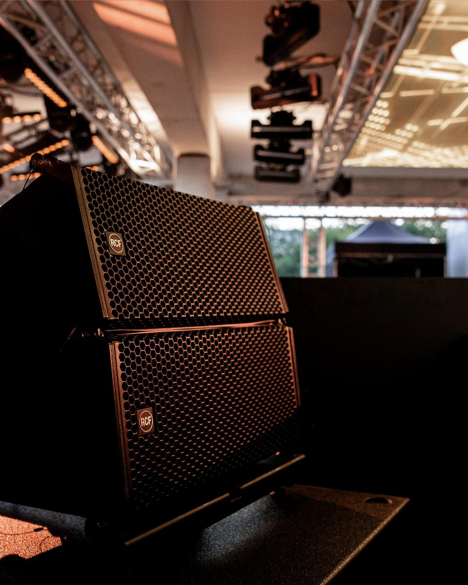

DE OPDRACHT
Een licht- en geluidsverhuurbedrijf voor privé-evenementen groeide uit zijn bestaande systeem. Er was krachtiger geluid nodig, maar vooral advies over systeemkeuze en uitbreiding.
Een geluidssysteem kiezen dat kan meegroeien

Sfeerbeeld · vervangbaarSysteemadvies en aankoopbegeleiding voor een licht- en geluidsverhuurbedrijf.
Een licht- en geluidsverhuurbedrijf voor privé-evenementen groeide uit zijn bestaande systeem. Er was krachtiger geluid nodig, maar vooral advies over systeemkeuze en uitbreiding.
HEAR adviseerde welk type systeem past bij verschillende ruimtes, welke aanschaf kan meegroeien met de verhuurder en hoe het systeem goed wordt opgesteld. Maarten begeleidde ook de aankoop tegen een scherpe prijs.
Goed advies verkleint de kans op een kostbare verkeerde aanschaf en helpt een verhuurder een systeem te kiezen dat bij de opdrachten van vandaag én de groei van morgen past.
“Mijn licht- en geluidsverhuurbedrijf voor privé-evenementen groeide duidelijk uit zijn jasje. Ik had krachtiger geluid nodig, maar vooral ook goed advies. Niet alleen over wat goed klinkt, maar ook over welk systeem past bij welke ruimte, welke aanschaf toekomstbestendig is en hoe je later kunt uitbreiden. En natuurlijk: hoe je het systeem goed neerzet.Opdrachtgever · verhuurbedrijf
Maarten adviseerde me vanuit HEAR en hielp bij de aanschaf van een nieuw geluidssysteem tegen een scherpe prijs. Een verkeerde keuze kan je op termijn immers ook veel geld kosten.”